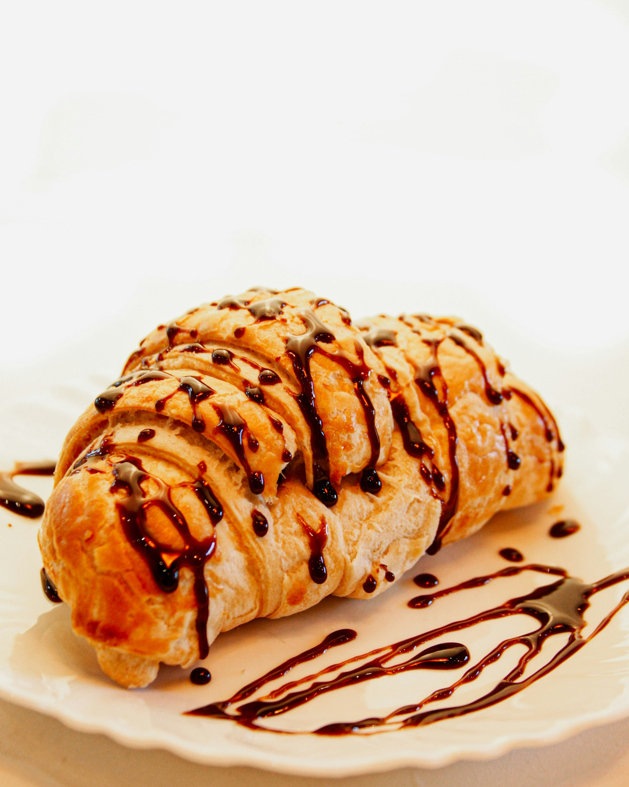

Croissant au Chocolat

Description
A luxurious French pastry featuring flaky, golden layers of buttery dough
wrapped around rich, dark chocolate bars.
Perfect for a sophisticated morning breakfast or paired with a hot
espresso in the afternoon.
Ingredients
- 1 sheet of high-quality puff pastry
- 100g of dark chocolate sticks or bars
- 1 egg (for the egg wash)
- 1 tablespoon of milk
Steps
- Roll out your puff pastry sheet on a clean surface.
- Cut the pastry into neat triangles or rectangles.
- Place a piece of dark chocolate at the wide edge of the pastry.
- Carefully roll the pastry up tightly around the chocolate.
-
Whisk the egg and milk together, then brush it over the top of the
croissants.
-
Bake in a preheated oven at 200°C (400°F) for 15-20 minutes until golden
brown.
Back to Homepage